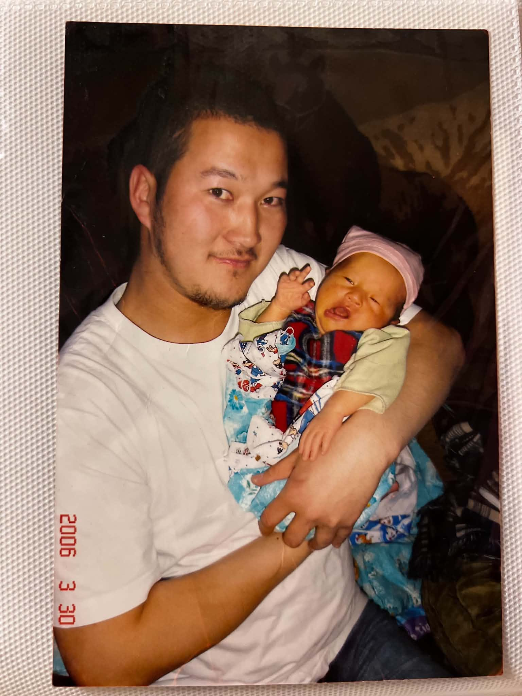
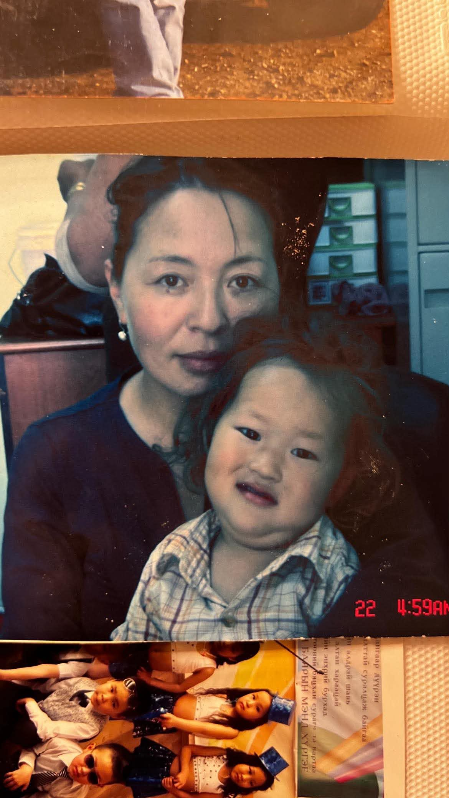
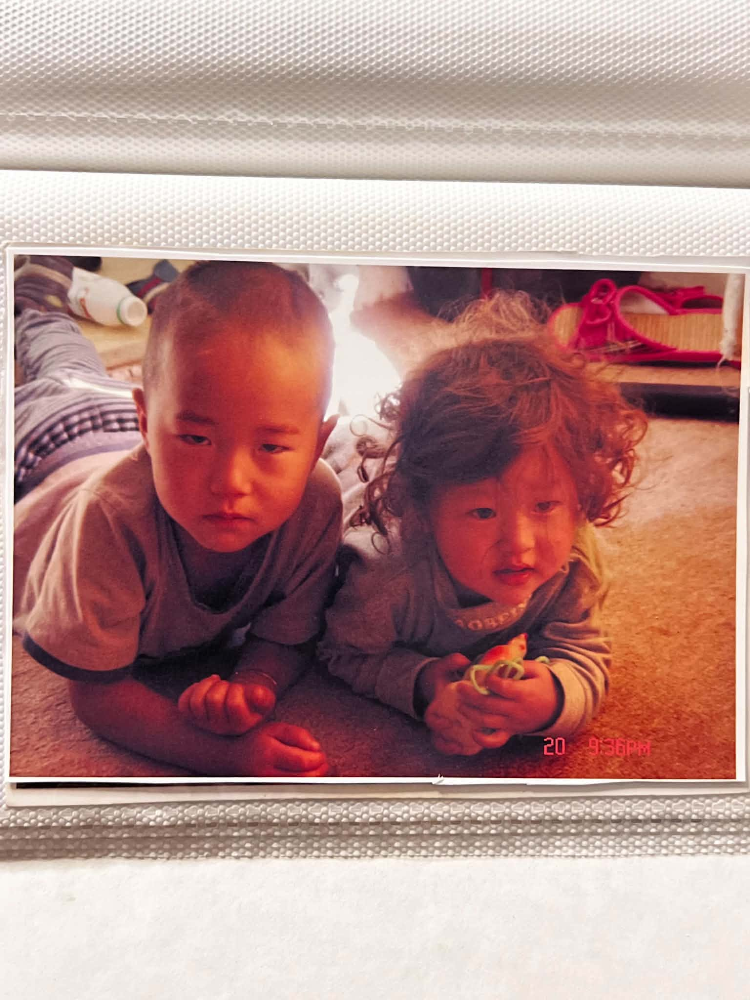

My dad
Here is dad and me. Sometimes he gets little bit mad easily but loves us. Also he is my hero just the way he is. I am so proud of him. He did so much for our family and he is the reason I am keep going.

Here is dad and me. Sometimes he gets little bit mad easily but loves us. Also he is my hero just the way he is. I am so proud of him. He did so much for our family and he is the reason I am keep going.

And it is my mom and sister. My two angel in one picture. She is so beautiful, smart, calm, caring and best mother of 2. I love my mom more than words could ever express it.

It is me and my little sister. She is angel for me and I want to be the one that she is looking up to as a big brother.And I have never spent a single day away from my sister in 19 years. I will support her side and love her for the rest of my life.No matter what happens she will always have me.